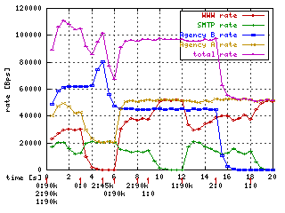

- Ağ donanımı bir seferde sadece bir paket gönderebilir ve bunun da hızı donanımın hızına bağlıdır. Bağlantı paylaşım yazılımı çok sayıda bağlantıyı farklı (daha düşük) hızlarda çalıştırmak amacıyla yaklaşık olarak sadece bu imkanı kullanabilir. Bu nedenle, hız ve tavan gerçekte anlık olarak ölçülen değerler değillerdir, çok sayıda paketin gönderimi sırasında ölçülen değenlerin ortalamalarıdırlar. Gerçekte olan şudur: bir sınıftaki trafik bir kaç paketi bir defada azami hızda gönderdikten sonra diğer sınıflara geçilir. burst ve cburst parametreleri, başka bir sınıfın hizmet vermesini denemeksizin, azami hızda (donanım hızında) gönderilebilecek veri miktarını denetim altına alır.cburst yeterince küçükse (ideali bir paket boyudur), TBF'deki peakrate'in yaptığı gibi, ceil hızını aşmayan sıçramalar şekillendirir.Ata sınıf için bir çocuğununkinden daha küçük burst belirttiğinizde, ata sınıfın bazan saplanıp kalacağını beklemelisiniz (çünkü çocuk, atasının elde edebileceğinden fazlasını tüketir). HTB bu negatif burst değerlerini 1 dakika süreyle hatırlayacaktır.Neden sıçrama istiyormuşum diye sorabilirsiniz. Fazla dolu bir bağlantı üzerinde yanıt verme süresini iyileştirmenin ucuz ve basit bir yoludur da ondan. Örneğin www trafiği sıçramalı bir trafiktir. Sayfa istediğinizde isteğiniz bir sıçramaya sığar ve onu alır okursunuz. Boşta kaldığı sürede sıçrama tekrar "şarj" edilir.

Not Bir sınıfın burst ve cburst'ü daima en azından çocuğununki kadar yüksek olmalıdır.
Bu çizgede bir önceki bölümde yer alan örnek durumda burst'ün kırmızı ve sarı sınıflar (agency A) için 20 kb yapıldığı durum görülmektedir, cburst aynı bırakılmıştır. SMTP sınıfının burst değerinden dolayı yeşil çizginin tepe yaptığı zaman noktası 13'tür. 9. zaman noktasından itibaren sınırın altında kalmış ve artarak 20 kb burst'e gelmiştir. Tepe noktasında 20 kb'e kadar çıkmıştır (burada tavan değeriyle sınıra ulaşmıştır çünkü cburst paket değerine yaklaşmıştır). Dikkatli okuyucular neden 7. zaman noktasında kırmızı ve sarı çizgilerin tepe yapmadığını merak etmiştir. Bunun nedeni sarı çizginin zaten tavan değerine ulaşmış olması ve daha fazla burst için yeri kalmamış olmasıdır. Burada en azından bir yerde istenmeyen bir etki oluşmuştur: Mor renkli çizgi 4. zaman noktasında çukur yapmıştır. Bunun nedeni de kök bağlantı (1:1) sınıfı için burst eklemeyi "unutmuş" olmamdır. Bu sınıf 1. zaman noktasında tepe yaptığını hatırlamış, 4. zaman noktasında mavi sınıf sarı sınıftan bant genişliği almak istediğinde onu reddetmiş ve kendini buna göre dengelemiştir.
Sınırlama: Düşük çözünürlüklü bir zamanlayıcısı olan bir bilgisayar üzerinde yüksek hızlarla çalıştığınız zaman, tüm sınıflar için size biraz küçük tutulmuş burst ve cburst gerekir. Zamanlayıcı çözünürlüğü i386 sistemlerinde 10ms, Alfalarda ise 1 ms'dir. Küçükçe bir burst değeri azami_hız*zamanlayıcı_çözünürlüğü olarak hesaplanabilir. Dolayısıyla, düz i386'da 10Mbit için 12kb'lık bir burst değerine ihtiyacınız olur.Çok küçük bir burst belirtirseniz, ayarladığınızdan daha düşük hızla karşılaşırsınız. En son tc sürümü, belirtmediğiniz takdirde olası en düşük burst değerini hesaplayacak ve atayacaktır.